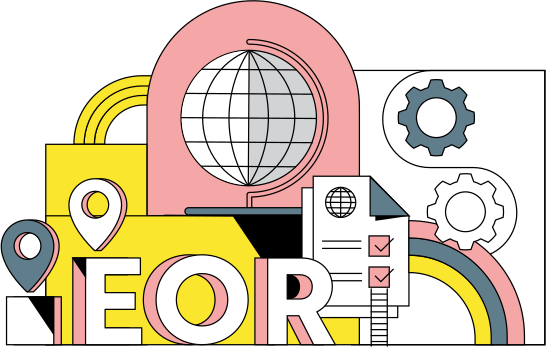

En un mercado internacional cada vez más interconectado y globalizado, la búsqueda y retención del talento adecuado se ha vuelto un desafío significativo. República de Panamá también experimenta esta realidad.
El 65% de las empresas en Panamá tiene dificultades para encontrar talento con habilidades requeridas, según estudios de Manpower Group. Además, un 48% tiene planes de aumentar su plantilla. Este dato es un indicador claro de que el crecimiento empresarial y la expansión de operaciones están en la agenda de muchas organizaciones en Panamá.
En respuesta a este escenario, Panamá está emergiendo como un centro de contratación internacional para la prestación de servicios, facilitando tanto a las empresas locales que buscan contratar en el extranjero como a las organizaciones internacionales que desean contratar de forma remota en el país. Sobre este punto, aquí te compartimos todos los detalles.
¿Cómo funciona la contratación internacional?
Para entender cómo funciona la contratación internacional, pensemos en una empresa con sede en Estados Unidos que busca contratar talento en Panamá. Imaginemos que se trata de una organización especializada en el desarrollo de software para agencias publicitarias que, debido a la creciente demanda y a la escasez de ciertas habilidades en su mercado local, decide expandir su búsqueda de talento más allá de las fronteras nacionales.
Panamá se presenta como una opción atractiva debido a su creciente reputación como centro emergente de contratación internacional, con una significativa reserva de profesionales altamente calificados con buen nivel de inglés. Este es un claro ejemplo de qué es la contratación internacional.

Entonces, esta estrategia de incorporación de empleados es un proceso mediante el cual las empresas establecen relaciones laborales con profesionales de otros países para cubrir necesidades específicas a través de un contrato de trabajo:
-
Para empresas internacionales que buscan contratar en Panamá de forma remota: también, las empresas internacionales están optando por aprovechar la infraestructura y las ventajas que ofrece Panamá para establecer equipos remotos. Esto implica contratar talento local sin requerir una presencia física en el país, es decir, por medio de un EOR, o Employer of Record.
-
Para empresas panameñas que desean contratar en el extranjero: pueden utilizar esta modalidad de contratación para acceder a un pool más amplio de talento especializado que pueda contribuir al crecimiento y la innovación, de manera de superar las limitaciones del mercado local y encontrar profesionales con habilidades específicas no fácilmente disponibles en Panamá. Además, puede fomentar la diversidad cultural y de pensamiento en el entorno laboral, enriqueciendo así la dinámica interna. Incluso, en algunos casos, los talentos internacionales puede contribuir con la venta internacional del producto o servicio que ofrece la empresa y hasta con las relaciones comerciales en ese país.
Obtén el talento que quieres para el trabajo sin preocuparte por el compliance; nosotros nos encargaremos de eso por ti.


Ahora bien, para acertar en este proceso, es relevante que comiences por identificar cuáles son las necesidades específicas de tu equipo y tu empresa en general. Para eso, determina claramente cuáles son los perfiles y aquellas habilidades que son requeridas para los puestos vacantes. Así, podrás determinar qué tipo de contrato necesites. Posteriormente, explora si el mercado laboral de Panamá cubre dichas necesidades.
Beneficios y ventajas de la contratación internacional para empresas en Panamá
En el contexto empresarial de Panamá, la contratación internacional se erige como una estrategia fundamental por la gran disponibilidad de medios electrónicos que existen en la actualidad. En este apartado, analizaremos de cerca los múltiples beneficios y ventajas que esta práctica brinda a las empresas.
Flexibilidad para crecer y establecer presencia en diversos países según la demanda
La rápida evolución de las necesidades del mercado puede exigir una expansión ágil hacia regiones donde tu empresa actualmente no tiene presencia. Si incorporas talento internacional, puedes establecer equipos en ubicaciones estratégicas y adaptarte rápidamente a los cambios en la demanda global, consolidando así una presencia flexible y efectiva en diferentes mercados.
Aprende cómo crear un equipo sin fronteras, acceder a talentos clave para tu negocio y aumentar la retención.


Minimización de los costos asociados a la contratación
Para que una empresa sea productiva y rentable, el ahorro de costos es un imperativo sobre el que trabajar. La eficiencia y la optimización de costos no pasa desapercibida para las empresas panameñas. Es por eso que recurren a la contratación internacional de talento, ya que muchas veces hacerlo en el plano local puede involucrar costos mayores (asociados con el salario y los beneficios laborales). Por lo tanto, este beneficio es una respuesta a:
-
Los altos costos laborales pueden ejercer presión sobre los márgenes de ganancia de las empresas en Panamá, en un entorno económico competitivo.
-
Esos mismos costos pueden limitar la capacidad de invertir en otras áreas críticas para el crecimiento y la innovación.
-
La demanda de talento local altamente calificado puede generar una competencia intensa entre las organizaciones, lo que lleva a aumentos salariales y costos laborales adicionales. Así, salir en búsqueda de empleados de alto rendimiento ubicados en otros países es una gran alternativa.
Acceso a un pool más amplio y diverso de talento con habilidades únicas
¿Necesitas empleados que dominen lenguajes como JavaScript o JAVA? Países como Brasil y México se destacan por ello. ¿El idioma inglés es muy importante para tus próximos proyectos y no consigues talento que lo maneje a la perfección, casi como nativos? En Argentina encuentras la respuesta. Estos son tan solo algunos ejemplos de habilidades relevantes por país en América Latina, sobre los que te contamos en nuestro Ebook sobre Contratar Talento Tech en LATAM.
Aprende a buscar, atraer y contratar en cualquier país de LATAM los mejores developers y talento tech para tu equipo.


Entonces, la falta de habilidades técnicas especializadas en el mercado local puede limitar la capacidad de una empresa para llevar a cabo proyectos que pueden implicar efectos significativos en la rentabilidad y el éxito, al igual que si hubiera una fuerte concentración de determinados perfiles en el mercado local esto puede afectar gravemente la diversidad de enfoques y pensamiento. Por lo tanto, la contratación internacional de trabajadores desde Panamá brinda la posibilidad de acceder a un abanico mucho más amplio de colaboradores con las habilidades que tu empresa necesita tener en su plantilla.
Lo mismo ocurre con las competencias comportamentales. De acuerdo con el estudio de Manpower Group, hay 5 habilidades blandas que más buscan los empleadores en Panamá. Estas son:
-
Colaboración y trabajo en equipo.
-
Fiabilidad y autodisciplina.
-
Razonamiento y resolución de problemas.
-
Pensamiento crítico y análisis.
-
Liderazgo e influencia social.
Mejora de la posición competitiva
La competencia en el mercado actual es intensa y requiere que las empresas estén constantemente en busca de ventajas estratégicas. Así, la mejora de la posición competitiva es fundamental para el éxito a largo plazo. Sin dudas, si una empresa no cuenta con talento con habilidades demandadas por el mercado y con perspectivas innovadoras, puede fácilmente quedar fuera del juego.
En adición, el hecho de promover la diversidad al contratar internacionalmente es una forma de hacer endomarketing. Descubre en este otro artículo de qué otras maneras puedes sacarle provecho para fortalecer tu cultura empresarial.
Aceleramiento del crecimiento, más rápido y sostenible
La dificultad para encontrar y contratar talento adecuado puede ralentizar el crecimiento, afectando la capacidad de aprovechar oportunidades de crecimiento. Asimismo, las limitaciones en la disponibilidad de habilidades y talento pueden generar obstáculos para escalar operaciones y la falta de un crecimiento sostenible puede agotar recursos y dejar a una empresa vulnerable. ¿Cómo superar esto? Con la contratación intencional, para acelerar el crecimiento y establecerse en nuevos mercados.
Modelos de contratación internacional
Hay dos principales modelos de contratación internacional sobre los que te compartimos detalles clave a continuación:
Contratar empleados remotos
La contratación de empleados remotos implica la incorporación de profesionales que trabajan de forma remota desde diferentes partes del mundo, sin requerir una ubicación física en la sede de la empresa. Este modelo ha ganado popularidad en los últimos años debido a las tecnologías avanzadas de comunicación y colaboración, que permiten una conexión fluida entre equipos distribuidos. Pero, ¿por qué las empresas de Panamá prefieren contratar empleados? Principalmente, porque les permite acceder a habilidades que no pueden encontrar localmente, al mismo tiempo que les ofrece flexibilidad operativa y pueden reducir gastos asociados al hecho de tener una oficina.
Respecto al mecanismo de funcionamiento de este modelo de contratación de empleados remotos, implica lo siguiente:
-
Selección global: búsqueda de talento en diversos países, eligiendo a los profesionales que mejor se ajusten a las necesidades del puesto y que compartan los valores y el propósito de la cultura organizacional.
-
Comunicación y colaboración en línea: uso de herramientas digitales para coordinar el trabajo y hacer un seguimiento preciso de las tareas involucradas en cada proyecto.
-
Contratación legal y cumplimiento normativo: en aras de asegurar el cumplimiento de las leyes laborales y tributarias del país de origen del empleado contratado de forma remota, se puede utilizar un Employer of Record (EOR) como Deel. Nosotros nos encargamos de administrar todo por ti y garantizamos el compliance (el incumplimiento es uno de los errores más comunes). Los incorporamos rápidamente en más de 100 países sin el costo y la administración adicional.

Cuando utilizas un EOR para contratar empleados, le permites a tu equipo de RRHH facilitar la gestión administrativa al mismo tiempo que cubres con las especificaciones técnicas y legales.
Conoce más sobre nuestras soluciones, habla con uno de nuestros especialistas y soluciona todas tus preguntas.

Contratar freelancers remotos
Esto implica la colaboración con profesionales independientes de diversas partes del mundo para determinados proyectos. Estos freelancers trabajan de manera autónoma y pueden ser contratados para tareas puntuales a corto plazo. Tan solo debes definir cuáles son las habilidades y competencias necesarias para hacer frente a tu proyecto y buscar trabajadores independientes que las tengan. Luego, debes establecer los términos del contrato y acordar los plazos de entrega, para finalmente comenzar a trabajar con freelancers en las tareas asignadas (recuerda hacer un onboarding para contratistas para una inducción efectiva).
Gracias a este modelo de constatación, podrás adaptar tu fuerza laboral según los picos de demanda o las necesidades que aparezcan, sin establecer compromisos a largo plazo. Asimismo, puedes contar con profesionales que son expertos en diferentes campos.

¿Sabías que con Deel también puedes contratar trabajadores independientes en todo el mundo, de forma legal? Automatiza la incorporación, garantiza el cumplimiento de las regulaciones y normas aplicables, la facturación y los pagos para que puedas centrarte en crear tu mejor negocio. ¡Descubre más aquí!
Independiente de si buscas contratar empleados o freelancers, es clave que utilices contratos localizados según el país donde se encuentren para proteger a tu empresa y garantizar que ofrecer todos los beneficios obligatorios por ley correspondientes al país. No solo se trata de que se incluya el objeto del contrato, sino también que haya claridad desde ambas partes en cada detalle.
La contratación internacional desde y en Panamá
La contratación internacional desde y en Panamá representa un fenómeno emergente que refleja la creciente globalización y conectividad laboral.
Revisemos ambos panoramas en detalle:
¿Cómo contratar empleados desde Panamá?
Cuando se trata de contratar empleados internacionales para trabajar en tu empresa en Panamá, hay una serie de desafíos a los que tienes que hacer frente. Están vinculados con aspectos legales y de cumplimiento, con el fin de evitar inconvenientes legales y financieros que pueden poner en peligro tu negocio. Es que cada país tiene su propio marco normativo, regulaciones diferentes y leyes que tienes que conocer. Por suerte, existe la posibilidad de delegar parte de esta tarea a un aliado de contratación o socio local.
Este aliado de contratación debe darte la seguridad necesaria, en tanto está en permanente conocimiento sobre actualizaciones y cambios en las normas de los países en los que deseas contratar desde Panamá, ¡para hacer todo de forma legal!
Por ejemplo, la forma de calcular el salario y las prestaciones sociales que son obligatorias difieren radicalmente de un país a otro. A propósito, ¿ya sabes cómo puedes simplificar la nómina? Puedes hacerlo con Deel y aquí te contamos cómo.
¿Cómo contratar empleados remotos en Panamá?
Es una estrategia que facilita el crecimiento y el acceso a talento internacional sin limitaciones por las barreras geográficas de tiempo y espacio. Muchas empresas ya han implementado la contratación de talento internacional en Panamá. El crecimiento de panameños contratados desde el exterior de agosto 2022 a agosto 2023 es de 116%, de acuerdo con estadísticas propias de Deel.
%EF%B9%96width=1440&height=904&name=Contract%20creation%20-%2015%20(1).png)
Para hacerlo, hay dos formas:
-
Abrir una filial en Panamá: puedes abrir una entidad extranjera en este territorio, y tu empresa matriz la controlará y la usará para la contratación y el pago de empleados locales. Es el método más tradicional, aunque no es el mecanismo más rentable.
-
Usar un empleador de registro: esta figura es la que se encarga de contratar empleados en Panamá en tu nombre. De esta manera, no tienes que atravesar el proceso de apertura de una filial extranjera en dicho país. Quien asume la responsabilidad legal y financiera de durante todo el ciclo de vida del empleado panameño es el EOR.
Ahora bien, también es importante saber que:
-
El salario mínimo oscila entre USD 275 y USD 970.
-
El impuesto sobre la renta de las personas físicas oscila entre el 0% y el 25%.
-
El pago de horas extras es obligatorio.
¿Quieres saber más para el cumplimiento? Descarga esta guía para contratar empleados en Panamá.
Enfoque integral sobre la contratación internacional en Panamá
La contratación internacional en Panamá no solo beneficia a las empresas, sino también a organismos internacionales y personas jurídicas que buscan establecer relaciones comerciales sólidas en el país.
Los proponentes de servicios públicos, en particular, pueden aprovechar las leyes especiales y los decretos ejecutivos para facilitar su entrada al mercado panameño. Además, la comprensión de los Incoterms y el derecho internacional comercial es esencial para garantizar que estas transacciones sean fluidas y exitosas.
En muchas ocasiones, la colaboración a través de joint ventures se convierte en la estrategia óptima para llevar a cabo proyectos internacionales de envergadura. Las leyes panameñas, en consonancia con el derecho comercial internacional, brindan un marco sólido para la creación y operación de estas alianzas estratégicas.
La autoridad competente en Panamá respalda la seguridad y confiabilidad de los acuerdos comerciales internacionales, y las regulaciones de las Naciones Unidas sobre comercio exterior y contratación pública ofrecen una guía valiosa para todas las partes involucradas.
La contratación internacional en Panamá se sustenta en una base legal sólida, permitiendo a las empresas, personas jurídicas y organismos internacionales aprovechar al máximo sus oportunidades. A través de la comprensión de las leyes, decretos ejecutivos y regulaciones, así como el uso adecuado de los Incoterms, se promueve una colaboración efectiva en el ámbito del derecho internacional comercial, impulsando el crecimiento y la prosperidad de todas las partes involucradas.
¿Cómo contratar internacionalmente desde Panamá con Deel?
¿Te gustaría aumentar tu fuerza laboral? Como Form3, que la incrementó un 20% en un año con la ayuda de Deel. Es una empresa de tecnología de pagos cuyo objetivo es hacer que los pagos sean más fáciles y rápidos a través de la nube, que tenía el desafío de convertir a los contratistas en empleados permanentes, pero había un problema: esos contratistas estaban ubicados en países donde Form3 no tenía entidad. Como sabían que era casi imposible establecer 10 o 15 entidades comerciales, buscaron una solución que los apoyara en la contratación del talento más calificado como empleados permanentes, independientemente de su ubicación. Así fue cómo llegaron a Deel.
Deel tiene entidades legales en más de 100 países y soporte experto en visas, puedes incorporar empleados de todo el mundo desde la República de Panamá. Manejemos el cumplimiento y nos encargamos de todo, para que cumplas con las leyes locales en materia de contratos, salario mínimo, despidos y otras leyes locales. Dedica menos tiempo a la nómina, relájate con la forma de pago y paga a todos tus empleados con un pago al por mayor y nosotros nos encargaremos de los asuntos engorrosos (como deducciones de impuestos, pensiones, beneficios y tarifas gubernamentales). ¡Expande tu pool de talento con Deel EOR!
O habla con nuestro equipo de ventas para solucionar tus dudas. Agenda un demo aquí.
Deel es payroll y compliance creado para la fuerza laboral mundial. Empieza a contratar hoy, donde quieras.


.svg)